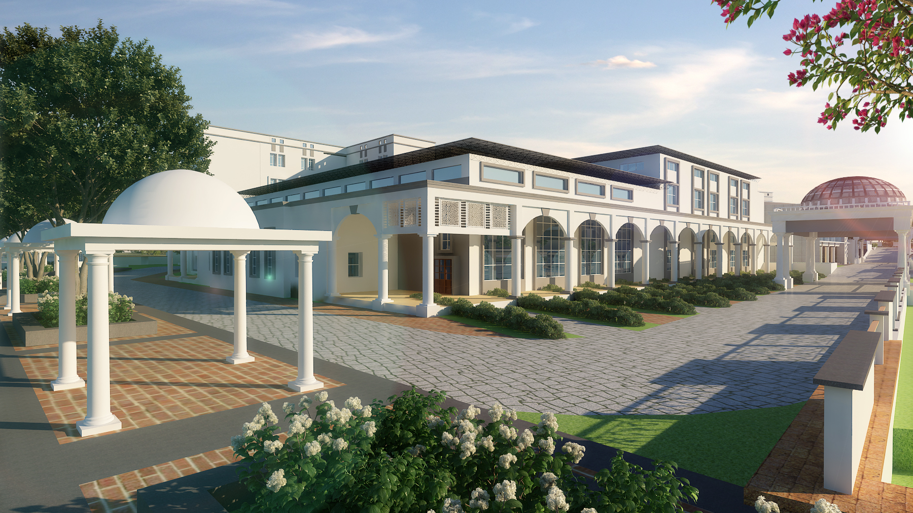
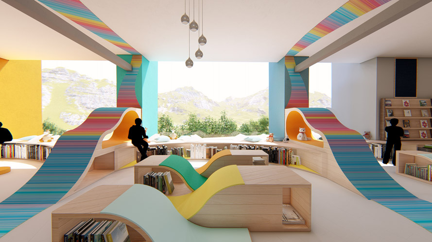
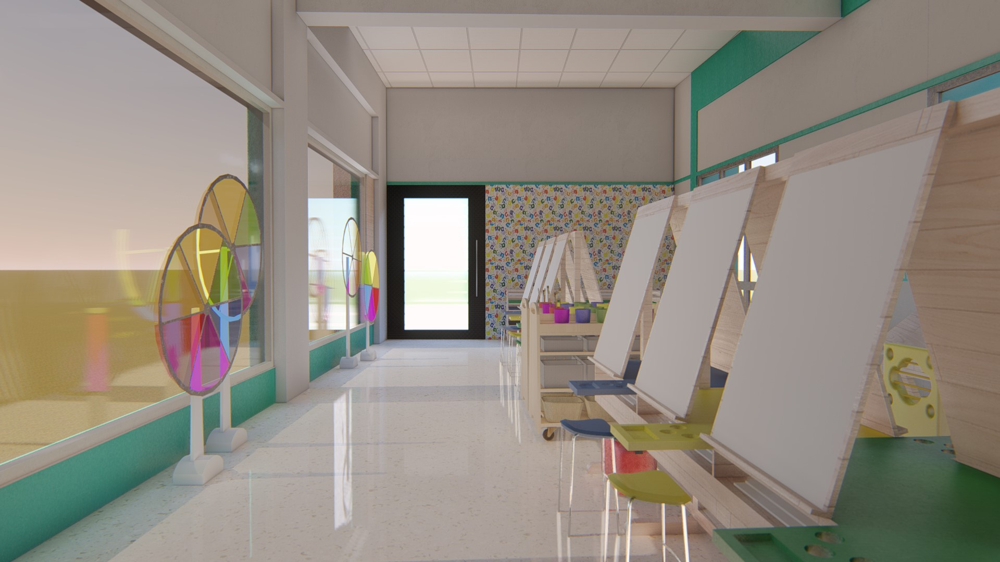
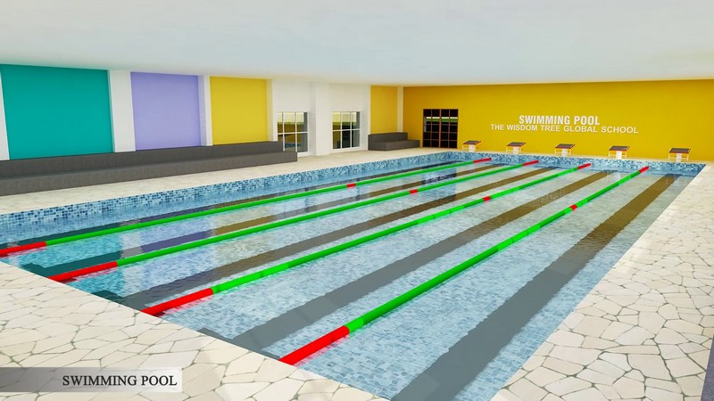
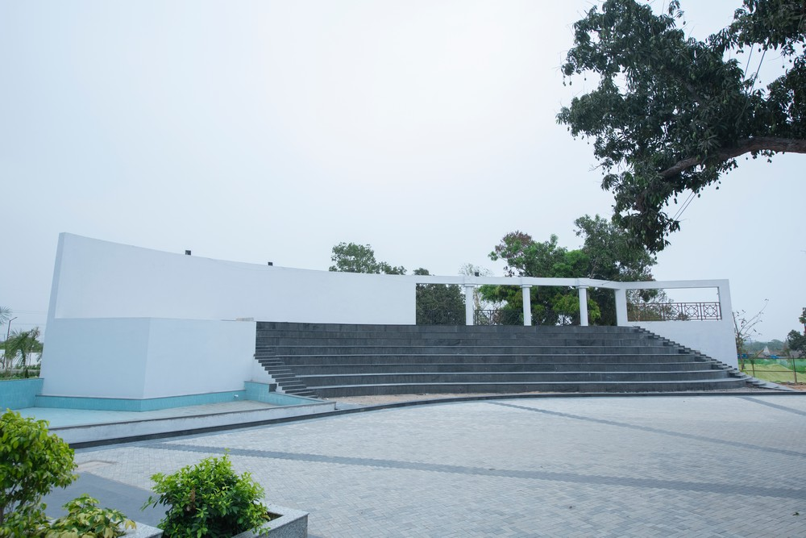
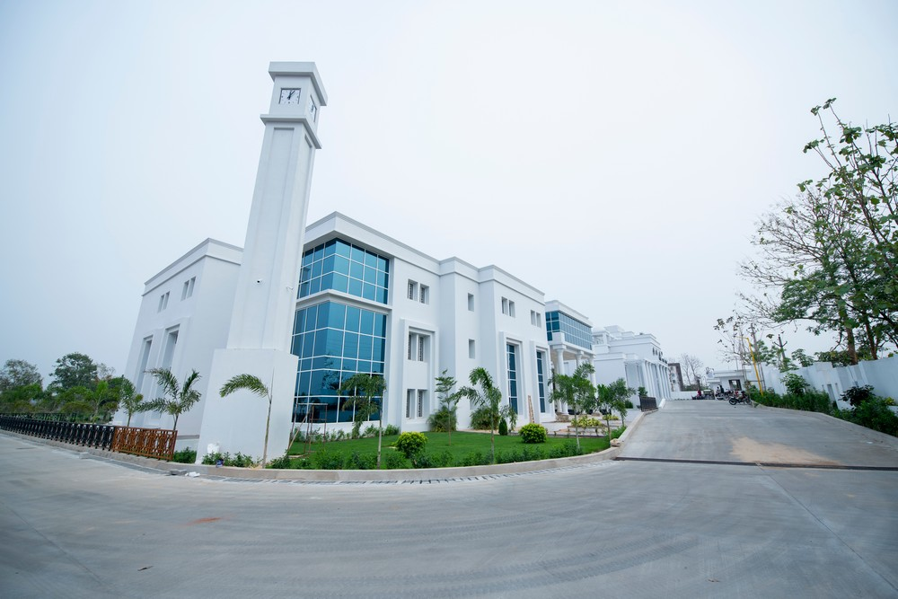
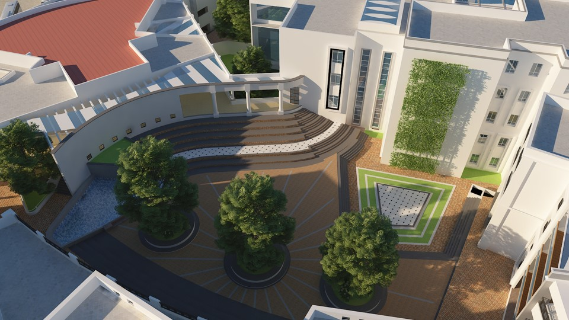

Wisdom Tree Global School

Overview
The DN Wisdom Tree Global School is set on a 12-acre campus at Sundarpur, on the quiet outskirts of Bhubaneswar in Odisha, and was inaugurated in 2022. It provides a learning environment for 1,600 students within a built-up area of around 1,60,000 square feet. It was also one of the most complete commissions we have taken on: beyond the architecture, we were responsible for the interior design and the landscape architecture of the whole campus.
That breadth of involvement shaped the project. On many projects, architecture, interiors and landscape are handled by different consultants, and the joins between them show. At Wisdom Tree we could design the school as a single, continuous environment, from the masterplan down to the furniture and the planting. The buildings, the rooms inside them and the spaces between them were conceived together, with one set of ideas running through all three.
The central idea was incidental learning: the belief that children learn not only in lessons but from everything they encounter in the course of the day. We wove learning elements through the campus, indoors and out, so that every corner offers something to discover. Learning becomes part of how students move around the school — spontaneous, curious and self-directed.
These elements are deliberately subtle. They are designed into the fabric of the campus rather than added as decoration, so they reward attention without demanding it. A child might pass the same feature a hundred times before noticing what it shows, and that moment of noticing is the point. Incidental learning works best when it feels like discovery rather than instruction.
The landscape plays a central role. With 12 acres to work with, we could balance buildings and open space carefully, giving students room to play, explore and spend time outdoors. Gardens, play areas and green spaces extend the learning environment outside, supporting both recreation and education. In a climate as warm and humid as Odisha's, shade, planting and the movement of air through the campus are also essential to comfort.
The school offers an extensive range of facilities for sport and extra-curricular activity, reflecting a commitment to the development of the whole child. Sports fields and courts, spaces for the arts and areas for clubs sit alongside the academic buildings, giving students the chance to discover interests and talents beyond the curriculum.
Inside, the interiors carry the same philosophy. Classrooms are bright, flexible and welcoming, with furniture and finishes chosen to support different ways of learning. Colour, material and light were used to create spaces calm enough for concentration and engaging enough to spark curiosity. Because we designed the interiors alongside the architecture, the two work together: rooms are shaped for the way they will be used, and the details carry the same ideas as the building as a whole.
The campus was built to CBSE's affiliation norms, with classrooms of at least 500 square feet, dedicated laboratories and a library. It opened in 2022, two years after the National Education Policy 2020, and its planning reflects one of the policy's central ideas: that there should be no rigid separation between curricular and extra-curricular learning. Sport and the arts are given their own space alongside the academic buildings, as equal parts of a child's education.
Wisdom Tree reflects our belief that a school is more than a collection of classrooms. It is an environment that teaches — through its spaces, its landscape and its details — and when architecture, interiors and landscape are designed as one, that environment can be remarkably rich: a place where curiosity is encouraged at every turn, and where learning continues long after the lesson ends.
Architects — Kumar & Swamy Architects, Bangalore







